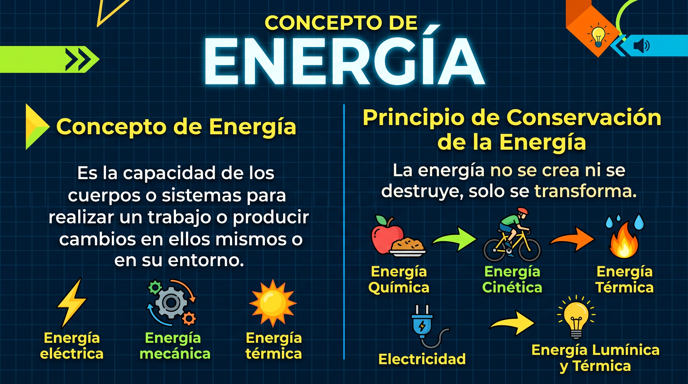

LA ENERGÍA

La energía es la capacidad que tiene un sistema para realizar un trabajo o producir cambios en la materia (como modificar su movimiento, temperatura, estado o composición). Se mide en Joules (J) según el Sistema Internacional.
Electricidad
Electricidad y magnetismo son dos manifestaciones interconectadas de una misma fuerza fundamental de la naturaleza: la fuerza electromagnética.
Electricidad
Conjunto de fenómenos físicos relacionados con la presencia y el flujo de cargas eléctricas. Se divide principalmente en:
- Electrostática: Estudia las cargas eléctricas en reposo y las fuerzas de atracción o repulsión entre ellas (Ley de Coulomb).
- Electrodinámica: Estudia las cargas en movimiento, es decir, la corriente eléctrica a través de un conductor.
Conceptos clave:
- Carga eléctrica (q): Propiedad intrínseca de las partículas subatómicas (electrones y protones). Se mide en Coulombs (C).
- Campo eléctrico (E): Región del espacio modificada por la presencia de una carga, que ejerce una fuerza sobre cualquier otra carga que se introduzca en él.
- Tensión o Voltaje (V): Diferencia de potencial eléctrico que impulsa a las cargas a moverse a través de un circuito.
- Corriente eléctrica (I): Caudal o flujo de carga eléctrica por unidad de tiempo. Se mide en Amperios (A).
Magnetismo
El magnetismo es la rama de la física que estudia las propiedades de los imanes y de las fuerzas de atracción o repulsión que estos ejercen sobre materiales ferromagnéticos como el hierro, el níquel y el cobalto.
Polos Magnéticos
Polo Norte y Sur. Ley de Atracción y Repulsión:
Todo imán presenta zonas donde la fuerza de atracción magnética se manifiesta con máxima intensidad. Estas regiones reciben el nombre de polos magnéticos, los cuales se clasifican convencionalmente en polo norte (N) y polo sur (S).
Esta denominación proviene de la propiedad de los imanes de orientarse espacialmente según el eje geográfico de la Tierra cuando pueden girar libremente.
El comportamiento de los polos magnéticos se rige por la Ley fundamental de las interacciones magnéticas:
- Polos del mismo nombre (igual signo) se repelen: si se aproximan dos polos nortes (N-N) o dos polos sures (S-S), se genera una fuerza ejercida a distancia que tiende a separarlos.
- Polos de distinto nombre (diferente signo) se atraen: al acercar un polo norte y un polo sur (N-S), se origina una fuerza magnética de atracción entre ellos.
Una propiedad física esencial de los imanes es la inseparabilidad de los polos magnéticos (ausencia de monopolos). Si un imán de barra se fragmenta en dos o más trozos, no se obtienen polos aislados; por el contrario, en cada uno de los fragmentos resultantes se reorganizan de forma inmediata un nuevo polo norte y un nuevo polo sur.
Campo Magnético
Definición de Campo Magnético y Líneas de Campo:
El campo magnético es la región del espacio que rodea a un imán o a una carga eléctrica en movimiento, dentro de la cual se hacen sentir sus influencias o fuerzas magnéticas. Aunque el campo magnético es una entidad física invisible, puede ser detectado mediante el uso de limaduras de hierro o agujas magnéticas.
Para representar gráficamente el campo magnético se utilizan las líneas de fuerza magnética (o líneas de inducción), un concepto introducido históricamente por el físico Michael Faraday. Las líneas de campo poseen las siguientes características formales:
- Trayectorias cerradas: las líneas de fuerza no tienen principio ni fin aislados. En el espacio exterior al imán, emergen del polo norte y se curvan para ingresar por el polo sur, continuando su recorrido por el interior del imán desde el polo sur de regreso al polo norte.
- Densidad y concentración: en las regiones cercanas a los polos magnéticos, las líneas se encuentran más próximas o apretadas entre sí, lo que indica visualmente que la intensidad del campo magnético es mayor en esos puntos.
- Imposibilidad de cruce: dos líneas de fuerza magnética nunca se intersecan en el espacio; el vector de campo magnético es tangente a las líneas en cada punto.